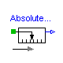
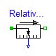
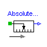
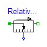
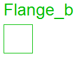
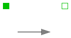

The following variables are transported through this connector:
s: Absolute position of the flange in [m]. A positive translation
means that the flange is translated along the flange axis.
f: Cut-force in direction of the flange axis in [N].
connector Flange_b "right 1D translational flange (flange axis directed OUT OF cut plane)" SI.Position s "absolute position of flange"; flow SI.Force f "cut force directed into flange"; end Flange_b;
Modelica.Mechanics.Translational.Interfaces.Rigid

This is a 1D translational component with two rigidly connected flanges. The distance between the left and the right flange is always constant, i. e. L. The forces at the right and left flange can be different. It is used e.g. to built up sliding masses.
Release Notes:
| Name | Default | Description |
|---|---|---|
| L | 0 | length of component from left flange to right flange (= flange_b.s - flange_a.s) [m] |
partial model Rigid
"Rigid connection of two translational 1D flanges "
SI.Position s
"absolute position of center of component (s = flange_a.s + L/2 = flange_b.s - L/2)"
;
parameter SI.Length L=0
"length of component from left flange to right flange (= flange_b.s - flange_a.s)"
;
Flange_a flange_a
"(left) driving flange (flange axis directed INTO cut plane, i. e. from left to right)"
;
Flange_b flange_b
"(right) driven flange (flange axis directed OUT OF cut plane, i. e. from right to left)"
;
equation
flange_a.s = s - L/2;
flange_b.s = s + L/2;
end Rigid;
Release Notes:
| Name | Default | Description |
|---|---|---|
| L | 0 | length of component from left flange to right flange (= flange_b.s - flange_a.s) [m] |
| smax | 25 | right stop for (right end of) sliding mass [m] |
| smin | -25 | left stop for (left end of) sliding mass [m] |
| v_small | 1e-3 | Relative velocity near to zero (see model info text) [m/s] |
partial model FrictionBase "Base class of Coulomb friction elements"
extends Rigid;
parameter SI.Position smax=25 "right stop for (right end of) sliding mass";
parameter SI.Position smin=-25 "left stop for (left end of) sliding mass";
parameter SI.Velocity v_small=1e-3
"Relative velocity near to zero (see model info text)";
// Equations to define the following variables have to be defined in subclasses
SI.Velocity v_relfric "Relative velocity between frictional surfaces";
SI.Acceleration a_relfric
"Relative acceleration between frictional surfaces";
SI.Force f
"Friction force (positive, if directed in opposite direction of v_rel)";
SI.Force f0 "Friction force for v=0 and forward sliding";
SI.Force f0_max "Maximum friction force for v=0 and locked";
Boolean free "true, if frictional element is not active";
// Equations to define the following variables are given in this class
Real sa "Path parameter of friction characteristic f = f(a_relfric)";
Boolean startForward
"true, if v_rel=0 and start of forward sliding or v_rel > v_small";
Boolean startBackward
"true, if v_rel=0 and start of backward sliding or v_rel < -v_small";
Boolean locked "true, if v_rel=0 and not sliding";
constant Integer Unknown=3 "Value of mode is not known";
constant Integer Free=2 "Element is not active";
constant Integer Forward=1 "v_rel > 0 (forward sliding)";
constant Integer Stuck=0
"v_rel = 0 (forward sliding, locked or backward sliding)";
constant Integer Backward=-1 "v_rel < 0 (backward sliding)";
Integer mode(
final min=Backward,
final max=Unknown,
start=Unknown);
equation
/* Friction characteristic
(locked is introduced to help the Modelica translator determining
the different structural configurations, if for each configuration
special code shall be generated)
*/
startForward = pre(mode) == Stuck and (sa > f0_max and s < (smax - L/2) or
pre(startForward) and sa > f0 and s < (smax - L/2)) or pre(mode) ==
Backward and v_relfric > v_small or initial() and (v_relfric > 0);
startBackward = pre(mode) == Stuck and (sa < -f0_max and s > (smin + L/2) or
pre(startBackward) and sa < -f0 and s > (smin + L/2)) or pre(mode) ==
Forward and v_relfric < -v_small or initial() and (v_relfric < 0);
locked = not free and not (pre(mode) == Forward or startForward or pre(mode)
== Backward or startBackward);
a_relfric = if locked then 0 else if free then sa else if startForward then
sa - f0 else if startBackward then sa + f0 else if pre(mode) == Forward
then sa - f0 else sa + f0;
/* Friction torque has to be defined in a subclass. Example for a clutch:
f = if locked then sa else if free then 0 else cgeo*fn*
(if startForward then Math.tempInterpol1( w_relfric, mue_pos, 2)
else if startBackward then -Math.tempInterpol1(-w_relfric, mue_pos, 2)
else if pre(mode) == Forward then Math.tempInterpol1(w_relfric, mue_pos, 2)
else -Math.tempInterpol1(-w_relfric, mue_pos, 2));
*/
// finite state machine to determine configuration
mode = if free then Free else (if (pre(mode) == Forward or pre(mode) == Free
or startForward) and v_relfric > 0 and s < (smax - L/2) then Forward else
if (pre(mode) == Backward or pre(mode) == Free or startBackward) and
v_relfric < 0 and s > (smin + L/2) then Backward else Stuck);
end FrictionBase;
Modelica.Mechanics.Translational.Interfaces.Compliant
This is a 1D translational component with a compliant connection of two translational 1D flanges where inertial effects between the two flanges are not included. The absolute value of the force at the left and the right flange is the same. It is used to built up springs, dampers etc.
Release Notes:
partial model Compliant
"Compliant connection of two translational 1D flanges"
Flange_a flange_a
"(left) driving flange (flange axis directed INTO cut plane, e. g. from left to right)"
;
Flange_b flange_b
"(right) driven flange (flange axis directed OUT OF cut plane)";
SI.Distance s_rel "relative distance (= flange_b.s - flange_a.s)";
flow SI.Force f
"forcee between flanges (positive in direction of flange axis R)";
equation
s_rel = flange_b.s - flange_a.s;
flange_b.f = f;
flange_a.f = -f;
end Compliant;
Modelica.Mechanics.Translational.Interfaces.TwoFlanges

This is a 1D translational component with two flanges. It is used e.g. to built up parts of a drive train consisting of several base components.
Release Notes:
partial model TwoFlanges
"Component with two translational 1D flanges "
Flange_a flange_a
"(left) driving flange (flange axis directed INTO cut plane, e. g. from left to right)"
;
Flange_b flange_b
"(right) driven flange (flange axis directed OUT OF cut plane)";
end TwoFlanges;
Modelica.Mechanics.Translational.Interfaces.Flange_a
The following variables are transported through this connector:
s: Absolute position of the flange in [m]. A positive translation
means that the flange is translated along the flange axis.
f: Cut-force in direction of the flange axis in [N].
connector Flange_a "(left) 1D translational flange (flange axis directed INTO cut plane, e. g. from left to right)" SI.Position s "absolute position of flange"; flow SI.Force f "cut force directed into flange"; end Flange_a;

This is the superclass of a 1D translational component with one flange and one output signal in order to measure an absolute kinematic quantity in the flange and to provide the measured signal as output signal for further processing with the Modelica.Blocks blocks.
Release Notes:
Copyright © 1999-2002, Modelica Association and DLR.
partial model AbsoluteSensor
"Device to measure a single absolute flange variable"
extends Modelica.Icons.TranslationalSensor;
Flange_a flange_a
"(left) flange to be measured (flange axis directed INTO cut plane, e. g. from left to right)"
;
Modelica.Blocks.Interfaces.OutPort outPort(final n=1);
end AbsoluteSensor;

This is a superclass for 1D translational components with two rigidly connected flanges and one output signal in order to measure relative kinematic quantities between the two flanges or the cut-force in the flange and to provide the measured signal as output signal for further processing with the Modelica.Blocks blocks.
Release Notes:
Copyright © 1999-2002, Modelica Association and DLR.
partial model RelativeSensor
"Device to measure a single relative variable between two flanges"
extends Modelica.Icons.TranslationalSensor;
Flange_a flange_a
"(left) driving flange (flange axis directed INTO cut plane, e. g. from left to right)"
;
Flange_b flange_b
"(right) driven flange (flange axis directed OUT OF cut plane)";
Modelica.Blocks.Interfaces.OutPort outPort(final n=1);
end RelativeSensor;